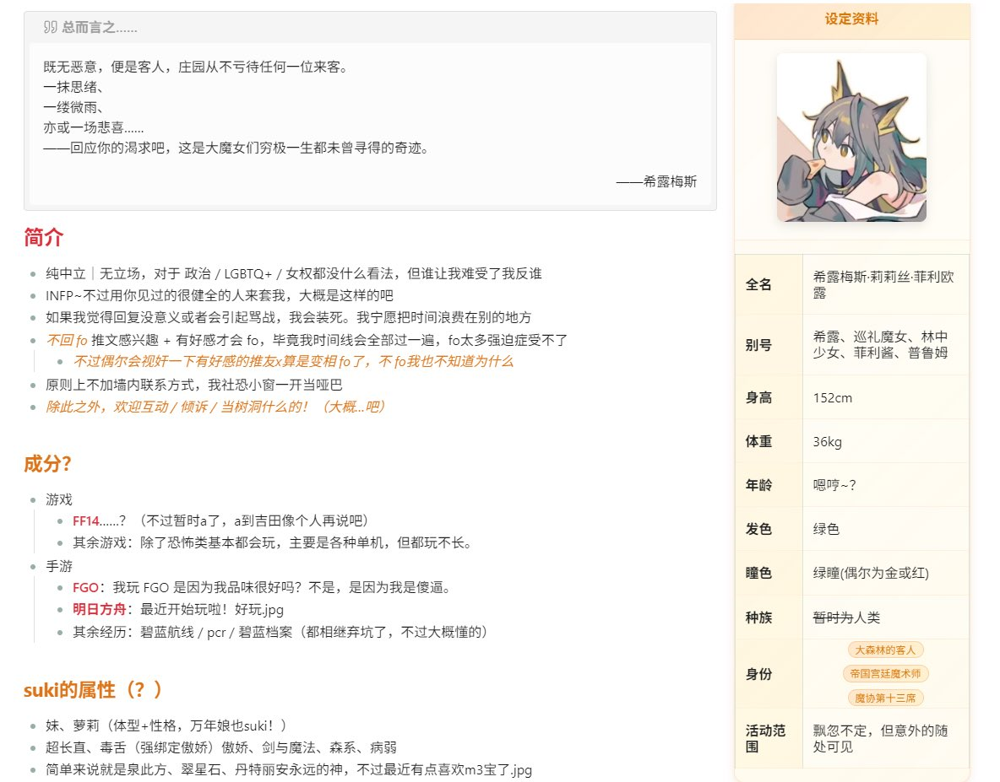

洇魔女だ
@8964_Y
@shirumesu 属性那个简直就是我

希露梅斯
@shirumesu
稍微更新下新置顶啦～
其实内容没变化，只是单纯做好看了点而且更中二了好耶！右边全是设定哦x
感觉更新置顶只是为了找个理由把obsidian的Infobox插件搓出来，这样就方便后面我整理oc角色了（
最后夸夸自己搓的挺不错～
好累啊.jpg
后面还能放点什么呢...赞赏码嘛有人给我爆金币吗（不是） https://t.co/fBJr2ZKc9C